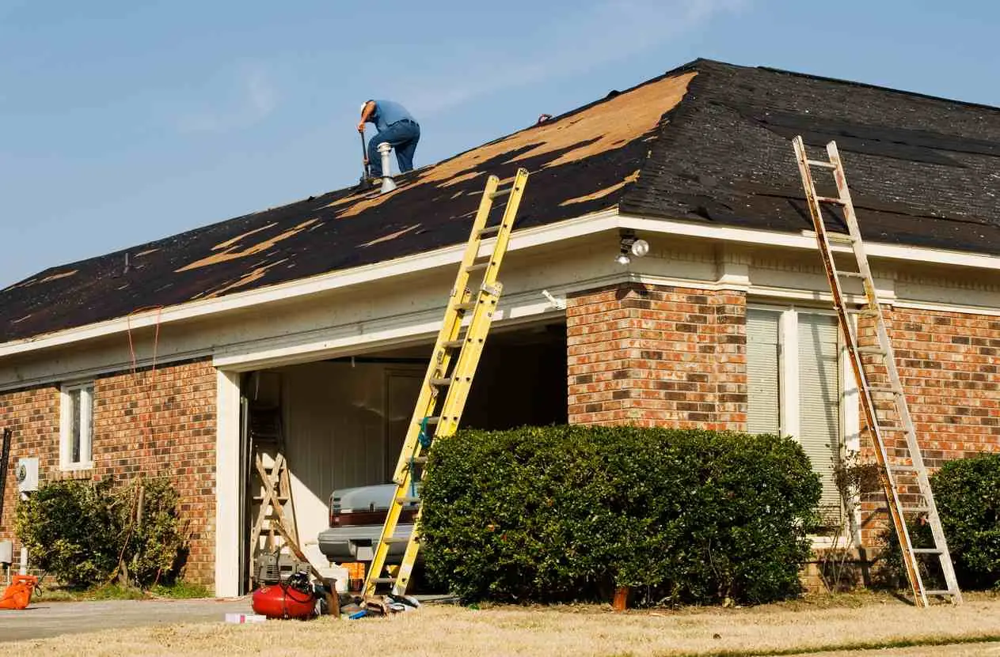

Request Free Quote!
Your roof protects your home and family from the elements. Heavy wind, rain storms, and other bad weather take a toll on your roof, especially when your roof is damaged by wind.. But with the right storm damage roof repair services, you can fix the damage before the next round of bad weather hits.
American Roofing Company is your local storm damage repair contractors. We’ve been helping Utah communities in the greater Salt Lake area with our storm damage repair services since 1954. Armed with over 70 years of experience and the best tools for the job, our team has the knowledge and skills to deliver high-quality results.
What Is Storm Damage?
We get all kinds of weather in Utah, from heavy snow to high winds, lightning, and just about everything in between. Your roof has to stand up to it all.
Sometimes, the elements get through your roof’s defenses and cause damage that requires repair. If a storm has compromised the condition of your roof, the rest of your home becomes more vulnerable to water damage and other issues.
Storm damage can range from cracked roofing shingles or tiles to sections of the roof being torn off altogether. Your roof takes the brunt of every storm, so it needs to be strong. One crack in that armor can lead to much larger problems.
The Types of Roof Damage
Our storm damage repair service team has the know-how to fix a wide variety of roofing issues, both common and atypical. Our crew always approaches the roof repair process with a holistic approach.
We repair:
- Roof leaks
- Damaged or missing shingles
- Wind damage roof repair
- Mold growth
- Damaged flashing
- Clogged gutters
- Gutters pulling away
- And more
What Are Signs of Storm Damage?
Common signs of storm damage include missing shingles or tiles, cracks in the shingles or tiles, and dark patches. You might also see visible debris on your roof, which can hide more significant damage below.
For interior signs of damage, look for atypical dripping sounds, leaking window seals, and stained walls or ceilings.
What’s the Best Way to Deal With Storm Damage?
Thunderstorms and snow storms in Utah can be a headache, especially when they do significant damage to the exterior of your home.

The specific storm damage repairs you need depend on factors like the age of your roof and the amount and type of damage your roof has sustained. Sometimes the damages in Salt Lake may be so severe that we recommend a roof replacement.
We don’t recommend that inexperienced homeowners try to make repairs on their own. While DIY solutions or hiring an unlicensed contractor can be tempting, you risk causing more damage or voiding your roof’s warranty.
If you suspect you have storm damage, give our crew a call, and we’ll come to your property and inspect:
- Your roofing system
- Your attic and ceilings
- Outside areas, including your lawn
- Gutters, windows, and vents
Homeowners can catch some problems, but other concerns require an expert’s eye. We are thorough in our inspections because detecting these problems lets us provide you with an accurate, straightforward estimate.
Contact American Roofing Company for Storm Damage Repair
American Roofing is ready to get your roof back in shape after a storm. Contact us for a free quote for storm damage repair.
Our Roof Inspection Can Make Filling Out Your Insurance Claim Easier
Your homeowner’s insurance policy may cover roof damage caused by wind, hail, ice, lightning, water, or fallen trees, so we recommend reading your policy thoroughly. Assessing your storm damage repair needs and navigating this process on your own can be daunting—especially if you’ve never done it before.
Why Choose American Roofing for Storm Damage Roof Repairs?
Our American Roofing team inspection services can make filling out your insurance claim easier, ensuring you gain maximum coverage and peace of mind. Our rigorous roof inspection means we can catch issues that would otherwise be easy to miss. Missing these issues might mean missing out on covered repairs.
Don’t let storms leave your roof compromised. Our storm damage repair contractors are experts at locating damage and evaluating the need for repairs. We handle emergency repairs so that you can rest assured.
Storm Damage Repair FAQs
Review some of the frequently asked questions about the damage caused by hail.